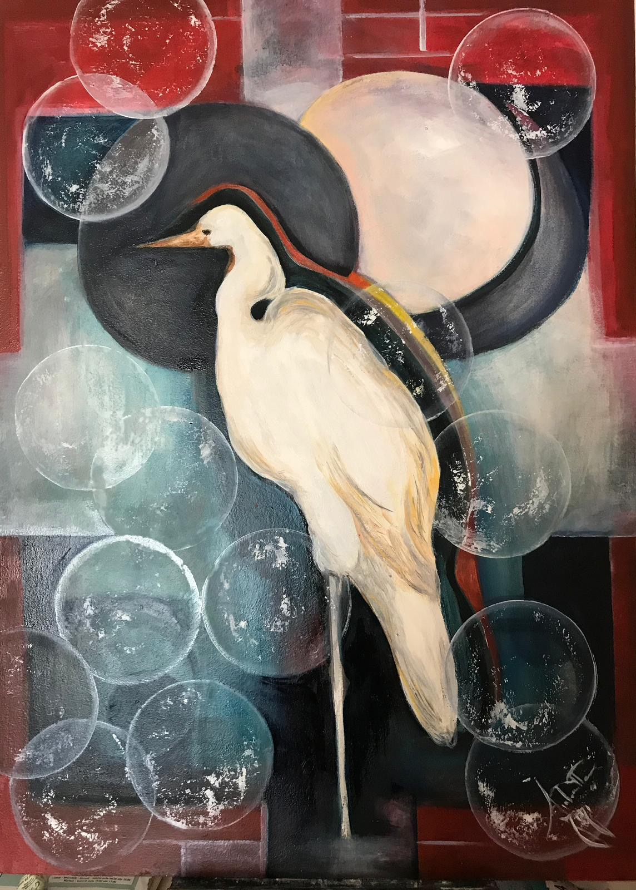
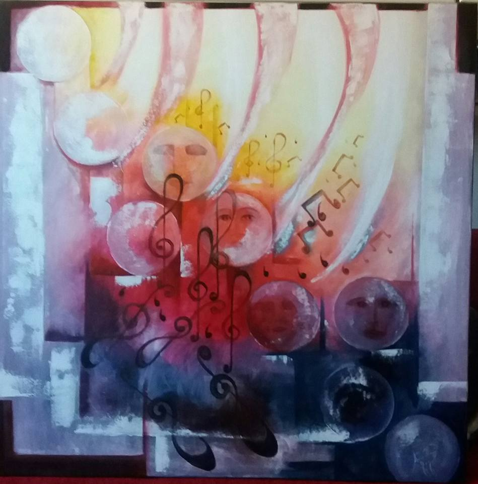
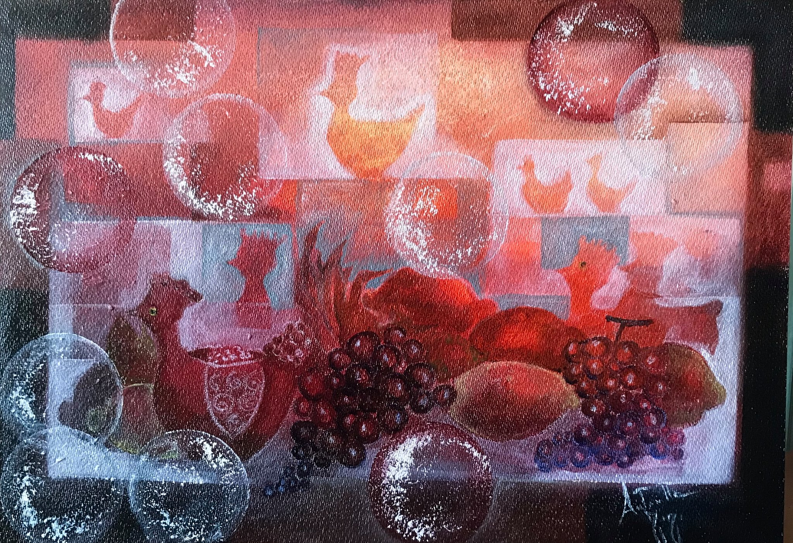
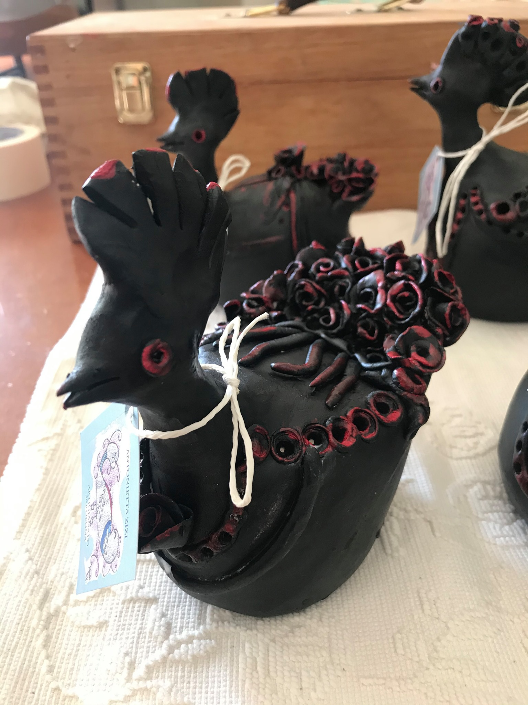
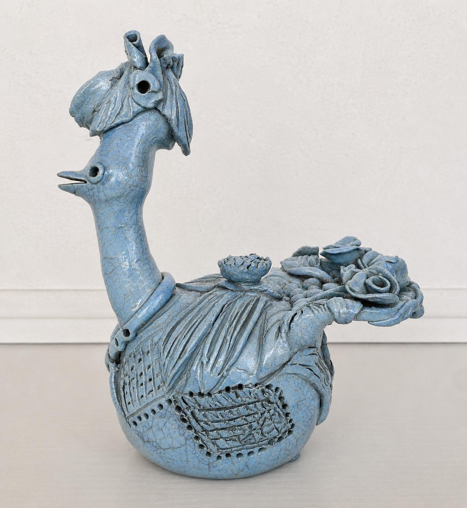
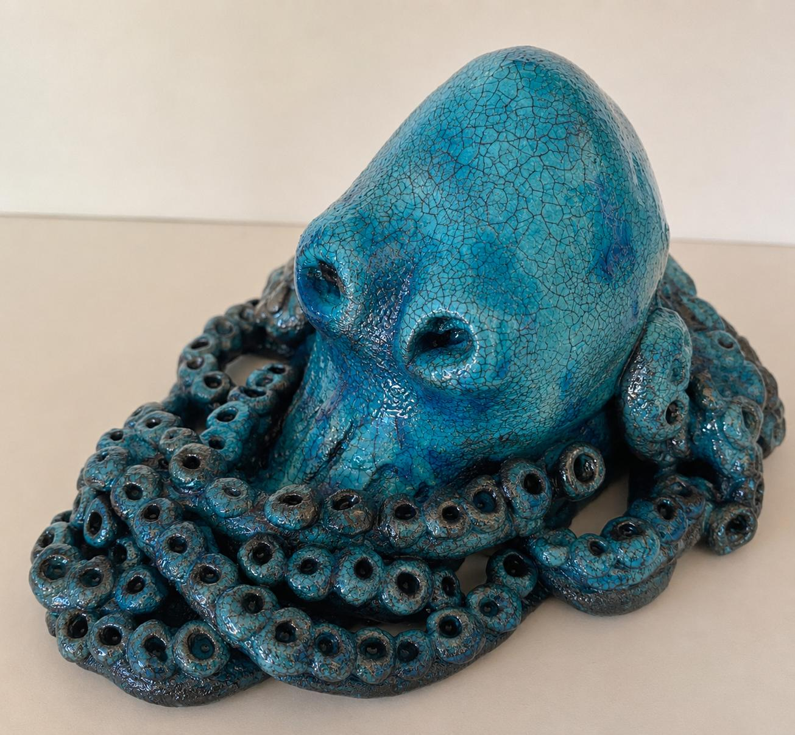
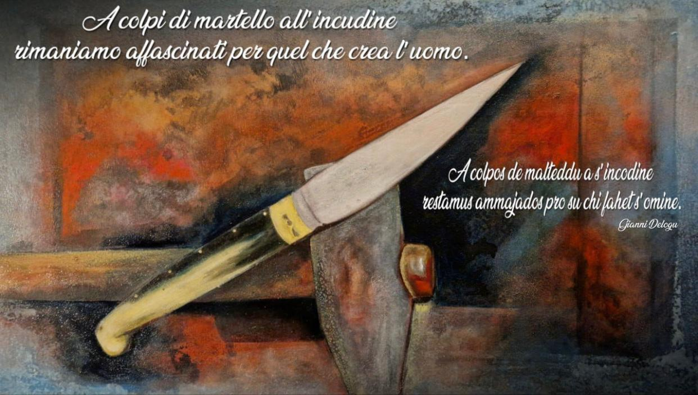
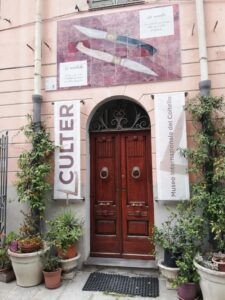
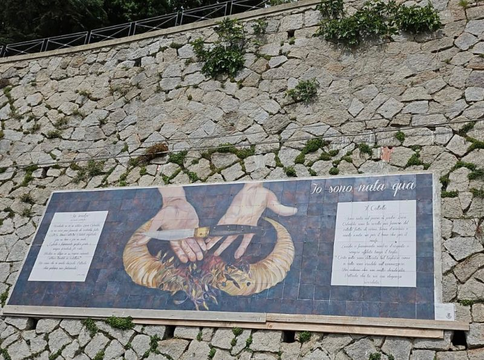

Galleria delle Opere
Un viaggio visivo attraverso quarant'anni di ricerca artistica, tra la materia della ceramica, l'intensità della pittura e la monumentalità del mosaico.
Opere Pittoriche

Titolo dell'Opera 1

Titolo dell'Opera 2

Titolo dell'Opera 3
Ceramica e Artigianato Artistico

Gallinelle nere e rosse

Gallina sarda azzurra

Polpo
Murales Monumentali e Mosaici

Murales "Racconti del Paese"

Lesorzas de Pattada

Lesorza de Pattada
Restauro Conservativo di Beni Sacri e Privati

Restauro mano Cristo Ligneo

Ceramica